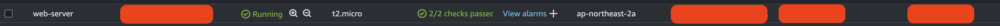

Mon, Aug 19, 2024
Don't forget to check two options when you create an instance. And we have to allocate an elastic ip address to your instance. We finished first step.

Check the domain you want to register for and then buy the domain.
Move to hosted zones and click your domain.
Click the button, create record.
Input your elastic ip address in value.
As a result, we connected route53 to ec2 instance.
# Connect to your instance
$ ssh -i `your.pem` ec2-user@kobevino.org
# Install nginx
$ sudo yum install nginx
# Run nginx server
$ sudo systemctl start nginxYou can see a welcome page of nginx without ssl. We have to implement SSL with let's encrypt.
# Stop nginx server
$ sudo systemctl stop nginx
$ cd /etc/nginx
$ sudo vim nginx.confInput your domain on server_name field in server block.
# Install certbot
$ sudo yum install certbot
# Install nginx plugin
$ sudo yum install python-certbot-nginx
# execute certbot
$ sudo certbot --nginx -d kobevino.orgAfter last command, sudo certbot --nginx -d kobevino.org, you have to write your email.
# For more information on configuration, see:
# * Official English Documentation: http://nginx.org/en/docs/
# * Official Russian Documentation: http://nginx.org/ru/docs/
user nginx;
worker_processes auto;
error_log /var/log/nginx/error.log notice;
pid /run/nginx.pid;
# Load dynamic modules. See /usr/share/doc/nginx/README.dynamic.
include /usr/share/nginx/modules/*.conf;
events {
worker_connections 1024;
}
http {
log_format main '$remote_addr - $remote_user [$time_local] "$request" '
'$status $body_bytes_sent "$http_referer" '
'"$http_user_agent" "$http_x_forwarded_for"';
access_log /var/log/nginx/access.log main;
sendfile on;
tcp_nopush on;
keepalive_timeout 65;
types_hash_max_size 4096;
include /etc/nginx/mime.types;
default_type application/octet-stream;
# Load modular configuration files from the /etc/nginx/conf.d directory.
# See http://nginx.org/en/docs/ngx_core_module.html#include
# for more information.
include /etc/nginx/conf.d/*.conf;
server {
server_name kobevino.org;
root /usr/share/nginx/html;
# Load configuration files for the default server block.
include /etc/nginx/default.d/*.conf;
error_page 404 /404.html;
location = /404.html {
}
error_page 500 502 503 504 /50x.html;
location = /50x.html {
}
listen [::]:443 ssl ipv6only=on; # managed by Certbot
listen 443 ssl; # managed by Certbot
ssl_certificate /etc/letsencrypt/live/kobevino.org/fullchain.pem; # managed by Certbot
ssl_certificate_key /etc/letsencrypt/live/kobevino.org/privkey.pem; # managed by Certbot
include /etc/letsencrypt/options-ssl-nginx.conf; # managed by Certbot
ssl_dhparam /etc/letsencrypt/ssl-dhparams.pem; # managed by Certbot
}
# Settings for a TLS enabled server.
#
# server {
# listen 443 ssl http2;
# listen [::]:443 ssl http2;
# server_name _;
# root /usr/share/nginx/html;
#
# ssl_certificate "/etc/pki/nginx/server.crt";
# ssl_certificate_key "/etc/pki/nginx/private/server.key";
# ssl_session_cache shared:SSL:1m;
# ssl_session_timeout 10m;
# ssl_ciphers PROFILE=SYSTEM;
# ssl_prefer_server_ciphers on;
#
# # Load configuration files for the default server block.
# include /etc/nginx/default.d/*.conf;
#
# error_page 404 /404.html;
# location = /404.html {
# }
#
# error_page 500 502 503 504 /50x.html;
# location = /50x.html {
# }
# }
server {
if ($host = kobevino.org) {
return 301 https://$host$request_uri;
} # managed by Certbot
listen 80;
listen [::]:80;
server_name kobevino.org;
return 404; # managed by Certbot
}}If it completed successfully, check out your nginx.conf file. You can see new codes that managed by certbot.
$ sudo systemctl start nginx
# If you have some errors, check nginx status
$ systemctl status nginx.service
# Check 80 port
$ sudo lsof -i tcp:[PORT]
# Kill the port already in use
$ sudo kill -9 [PID]Finally, we can see https protocol.
If you don't work on crontab in your server, follow this step.
# Check crontab
$ sudo yum provides crontab
# Install cronie to use crontab
$ sudo yum install cronie
# Execute editor
$ crontab -e0 0 1 * * certbot renew --renew-hook "sudo service nginx reload"This means it automatically renews the authentication certificate every month at exactly 12:00 AM.
It's a little complicated, but I made it. Everyone can do it.